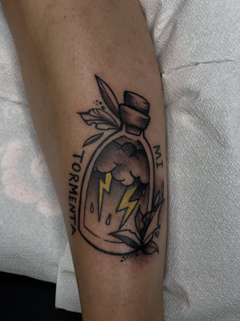
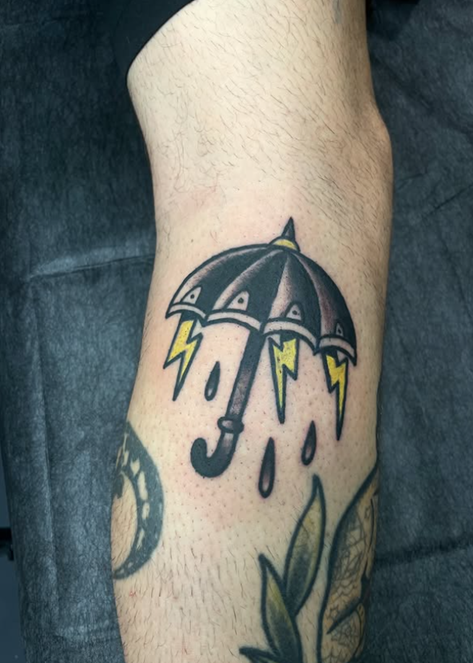
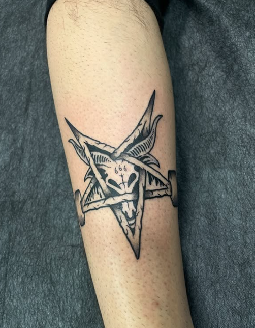
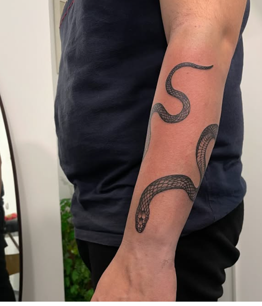
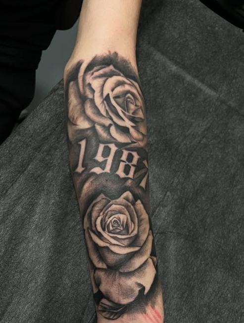
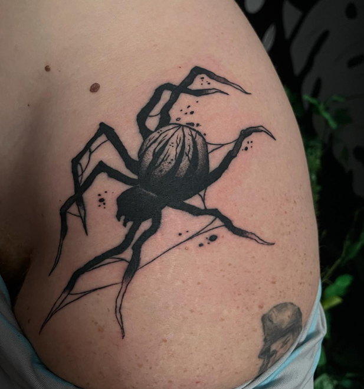

PORTFOLIO
Trabajo visual





01
Sobre el artista
Una forma de tatuar con presencia y composición.
Peter Tattoo desarrolla piezas con una dirección visual clara, donde la forma, el contraste y la lectura del tatuaje tienen un papel importante.
Desde Castellón, trabaja diseños enfocados en identidad, carácter y equilibrio visual sobre la piel.
ESTILOS
Lenguajes visuales que definen su trabajo
Neo tradicional
Línea sólida, fuerza visual y composición trabajada.
Tribal
Diseños intensos con presencia gráfica y lectura clara.
Neo tribal
Una interpretación más actual, fluida y expresiva.
Realismo selecto
Piezas concretas donde el detalle tiene protagonismo.
CONTACTO
Consultas y reservas
Para pedir cita, comentar una idea o enseñar referencias, contacta directamente por Instagram.
Abrir Instagram